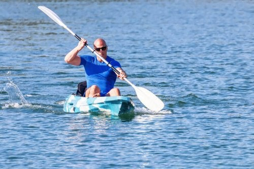

The Official website of FISA, the international rowing federation. Latest world rowing news.

The impact of Covid-19 has required new ways to organise events. This has seen the establishment of the Outbreak Prevention Taskforce and the World Rowing Federation, FISA, is part of it.
Latest News
Confirmed! The 2020 European Rowing Junior Championships
Angela Madsen; Rower, achiever, ground-breaker, extraordinary person
World Rowing announces revised 2021 regatta season
2020 World Rowing Awards replaced by a month of rowing celebration
ASOIF Governance review highlights key accomplishments for FISA
Related Information
World Rowing announces revised 2021 regatta season
regatta season
regatta season
regatta season
World Rowing announces revised 2021 regatta season
World Rowing announces revised 2021 regatta season
World Rowing announces revised 2021 regatta season